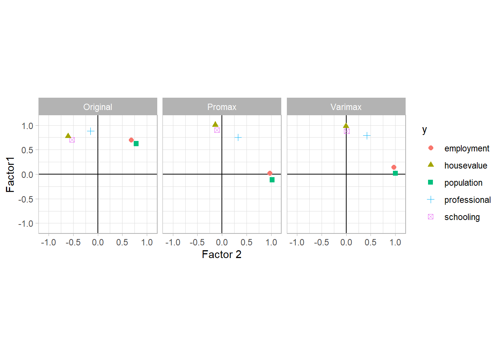

20.3 Factor Analysis
Purpose
Using a few linear combinations of underlying unobservable (latent) traits, we try to describe the covariance relationship among a large number of measured traits
Similar to PCA, but factor analysis is model based
More details can be found on PSU stat or UMN stat
Let \(\mathbf{y}\) be the set of \(p\) measured variables
\(E(\mathbf{y}) = \mathbf{\mu}\)
\(var(\mathbf{y}) = \mathbf{\Sigma}\)
We have
\[ \begin{aligned} \mathbf{y} - \mathbf{\mu} &= \mathbf{Lf} + \epsilon \\ &= \left( \begin{array} {c} l_{11}f_1 + l_{12}f_2 + \dots + l_{tm}f_m \\ \vdots \\ l_{p1}f_1 + l_{p2}f_2 + \dots + l_{pm} f_m \end{array} \right) + \left( \begin{array} {c} \epsilon_1 \\ \vdots \\ \epsilon_p \end{array} \right) \end{aligned} \]
where
\(\mathbf{y} - \mathbf{\mu}\) = the p centered measurements
\(\mathbf{L}\) = \(p \times m\) matrix of factor loadings
\(\mathbf{f}\) = unobserved common factors for the population
\(\mathbf{\epsilon}\) = random errors (i.e., variation that is not accounted for by the common factors).
We want \(m\) (the number of factors) to be much smaller than \(p\) (the number of measured attributes)
Restrictions on the model
\(E(\epsilon) = \mathbf{0}\)
\(var(\epsilon) = \Psi_{p \times p} = diag( \psi_1, \dots, \psi_p)\)
\(\mathbf{\epsilon}, \mathbf{f}\) are independent
Additional assumption could be \(E(\mathbf{f}) = \mathbf{0}, var(\mathbf{f}) = \mathbf{I}_{m \times m}\) (known as the orthogonal factor model) , which imposes the following covariance structure on \(\mathbf{y}\)
\[ \begin{aligned} var(\mathbf{y}) = \mathbf{\Sigma} &= var(\mathbf{Lf} + \mathbf{\epsilon}) \\ &= var(\mathbf{Lf}) + var(\epsilon) \\ &= \mathbf{L} var(\mathbf{f}) \mathbf{L}' + \mathbf{\Psi} \\ &= \mathbf{LIL}' + \mathbf{\Psi} \\ &= \mathbf{LL}' + \mathbf{\Psi} \end{aligned} \]
Since \(\mathbf{\Psi}\) is diagonal, the off-diagonal elements of \(\mathbf{LL}'\) are \(\sigma_{ij}\), the co variances in \(\mathbf{\Sigma}\), which means \(cov(y_i, y_j) = \sum_{k=1}^m l_{ik}l_{jk}\) and the covariance of \(\mathbf{y}\) is completely determined by the m factors ( \(m <<p\))
\(var(y_i) = \sum_{k=1}^m l_{ik}^2 + \psi_i\) where \(\psi_i\) is the specific variance and the summation term is the i-th communality (i.e., portion of the variance of the i-th variable contributed by the \(m\) common factors (\(h_i^2 = \sum_{k=1}^m l_{ik}^2\))
The factor model is only uniquely determined up to an orthogonal transformation of the factors.
Let \(\mathbf{T}_{m \times m}\) be an orthogonal matrix \(\mathbf{TT}' = \mathbf{T'T} = \mathbf{I}\) then
\[ \begin{aligned} \mathbf{y} - \mathbf{\mu} &= \mathbf{Lf} + \epsilon \\ &= \mathbf{LTT'f} + \epsilon \\ &= \mathbf{L}^*(\mathbf{T'f}) + \epsilon & \text{where } \mathbf{L}^* = \mathbf{LT} \end{aligned} \]
and
\[ \begin{aligned} \mathbf{\Sigma} &= \mathbf{LL}' + \mathbf{\Psi} \\ &= \mathbf{LTT'L} + \mathbf{\Psi} \\ &= (\mathbf{L}^*)(\mathbf{L}^*)' + \mathbf{\Psi} \end{aligned} \]
Hence, any orthogonal transformation of the factors is an equally good description of the correlations among the observed traits.
Let \(\mathbf{y} = \mathbf{Cx}\) , where \(\mathbf{C}\) is any diagonal matrix, then \(\mathbf{L}_y = \mathbf{CL}_x\) and \(\mathbf{\Psi}_y = \mathbf{C\Psi}_x\mathbf{C}\)
Hence, we can see that factor analysis is also invariant to changes in scale
20.3.1 Methods of Estimation
To estimate \(\mathbf{L}\)
20.3.1.1 Principal Component Method
Spectral decomposition
\[ \begin{aligned} \mathbf{\Sigma} &= \lambda_1 \mathbf{a}_1 \mathbf{a}_1' + \dots + \lambda_p \mathbf{a}_p \mathbf{a}_p' \\ &= \mathbf{A\Lambda A}' \\ &= \sum_{k=1}^m \lambda+k \mathbf{a}_k \mathbf{a}_k' + \sum_{k= m+1}^p \lambda_k \mathbf{a}_k \mathbf{a}_k' \\ &= \sum_{k=1}^m l_k l_k' + \sum_{k=m+1}^p \lambda_k \mathbf{a}_k \mathbf{a}_k' \end{aligned} \]
where \(l_k = \mathbf{a}_k \sqrt{\lambda_k}\) and the second term is not diagonal in general.
Assume
\[ \psi_i = \sigma_{ii} - \sum_{k=1}^m l_{ik}^2 = \sigma_{ii} - \sum_{k=1}^m \lambda_i a_{ik}^2 \]
then
\[ \mathbf{\Sigma} \approx \mathbf{LL}' + \mathbf{\Psi} \]
To estimate \(\mathbf{L}\) and \(\Psi\) , we use the expected eigenvalues and eigenvectors from \(\mathbf{S}\) or \(\mathbf{R}\)
The estimated factor loadings don’t change as the number of actors increases
The diagonal elements of \(\hat{\mathbf{L}}\hat{\mathbf{L}}' + \hat{\mathbf{\Psi}}\) are equal to the diagonal elements of \(\mathbf{S}\) and \(\mathbf{R}\), but the covariances may not be exactly reproduced
We select \(m\) so that the off-diagonal elements close to the values in \(\mathbf{S}\) (or to make the off-diagonal elements of \(\mathbf{S} - \hat{\mathbf{L}} \hat{\mathbf{L}}' + \hat{\mathbf{\Psi}}\) small)
20.3.1.2 Principal Factor Method
Consider modeling the correlation matrix, \(\mathbf{R} = \mathbf{L} \mathbf{L}' + \mathbf{\Psi}\) . Then
\[ \mathbf{L} \mathbf{L}' = \mathbf{R} - \mathbf{\Psi} = \left( \begin{array} {cccc} h_1^2 & r_{12} & \dots & r_{1p} \\ r_{21} & h_2^2 & \dots & r_{2p} \\ \vdots & \vdots & \ddots & \vdots \\ r_{p1} & r_{p2} & \dots & h_p^2 \end{array} \right) \]
where \(h_i^2 = 1- \psi_i\) (the communality)
Suppose that initial estimates are available for the communalities, \((h_1^*)^2,(h_2^*)^2, \dots , (h_p^*)^2\), then we can regress each trait on all the others, and then use the \(r^2\) as \(h^2\)
The estimate of \(\mathbf{R} - \mathbf{\Psi}\) at step k is
\[ (\mathbf{R} - \mathbf{\Psi})_k = \left( \begin{array} {cccc} (h_1^*)^2 & r_{12} & \dots & r_{1p} \\ r_{21} & (h_2^*)^2 & \dots & r_{2p} \\ \vdots & \vdots & \ddots & \vdots \\ r_{p1} & r_{p2} & \dots & (h_p^*)^2 \end{array} \right) = \mathbf{L}_k^*(\mathbf{L}_k^*)' \]
where
\[ \mathbf{L}_k^* = (\sqrt{\hat{\lambda}_1^*\hat{\mathbf{a}}_1^* , \dots \hat{\lambda}_m^*\hat{\mathbf{a}}_m^*}) \]
and
\[ \hat{\psi}_{i,k}^* = 1 - \sum_{j=1}^m \hat{\lambda}_i^* (\hat{a}_{ij}^*)^2 \]
we used the spectral decomposition on the estimated matrix \((\mathbf{R}- \mathbf{\Psi})\) to calculate the \(\hat{\lambda}_i^* s\) and the \(\mathbf{\hat{a}}_i^* s\)
After updating the values of \((\hat{h}_i^*)^2 = 1 - \hat{\psi}_{i,k}^*\) we will use them to form a new \(\mathbf{L}_{k+1}^*\) via another spectral decomposition. Repeat the process
Notes:
The matrix \((\mathbf{R} - \mathbf{\Psi})_k\) is not necessarily positive definite
The principal component method is similar to principal factor if one considers the initial communalities are \(h^2 = 1\)
if \(m\) is too large, some communalities may become larger than 1, causing the iterations to terminate. To combat, we can
fix any communality that is greater than 1 at 1 and then continues.
continue iterations regardless of the size of the communalities. However, results can be outside fo the parameter space.
20.3.1.3 Maximum Likelihood Method
Since we need the likelihood function, we make the additional (critical) assumption that
\(\mathbf{y}_j \sim N(\mathbf{\mu},\mathbf{\Sigma})\) for \(j = 1,..,n\)
\(\mathbf{f} \sim N(\mathbf{0}, \mathbf{I})\)
\(\epsilon_j \sim N(\mathbf{0}, \mathbf{\Psi})\)
and restriction
- \(\mathbf{L}' \mathbf{\Psi}^{-1}\mathbf{L} = \mathbf{\Delta}\) where \(\mathbf{\Delta}\) is a diagonal matrix. (since the factor loading matrix is not unique, we need this restriction).
Notes:
Finding MLE can be computationally expensive
we typically use other methods for exploratory data analysis
LIkelihood ratio tests could be used for testing hypotheses in this framework (i.e., Confirmatory Factor Analysis)
20.3.2 Factor Rotation
\(\mathbf{T}_{m \times m}\) is an orthogonal matrix that has the property that
\[ \hat{\mathbf{L}} \hat{\mathbf{L}}' + \hat{\mathbf{\Psi}} = \hat{\mathbf{L}}^*(\hat{\mathbf{L}}^*)' + \hat{\mathbf{\Psi}} \]
where \(\mathbf{L}^* = \mathbf{LT}\)
This means that estimated specific variances and communalities are not altered by the orthogonal transformation.
Since there are an infinite number of choices for \(\mathbf{T}\), some selection criterion is necessary
For example, we can find the orthogonal transformation that maximizes the objective function
\[ \sum_{j = 1}^m [\frac{1}{p}\sum_{i=1}^p (\frac{l_{ij}^{*2}}{h_i})^2 - \{\frac{\gamma}{p} \sum_{i=1}^p (\frac{l_{ij}^{*2}}{h_i})^2 \}^2] \]
where \(\frac{l_{ij}^{*2}}{h_i}\) are “scaled loadings”, which gives variables with small communalities more influence.
Different choices of \(\gamma\) in the objective function correspond to different orthogonal rotation found in the literature;
Varimax \(\gamma = 1\) (rotate the factors so that each of the \(p\) variables should have a high loading on only one factor, but this is not always possible).
Quartimax \(\gamma = 0\)
Equimax \(\gamma = m/2\)
Parsimax \(\gamma = \frac{p(m-1)}{p+m-2}\)
Promax: non-orthognal or olique transformations
Harris-Kaiser (HK): non-orthognal or olique transformations
20.3.3 Estimation of Factor Scores
Recall
\[ (\mathbf{y}_j - \mathbf{\mu}) = \mathbf{L}_{p \times m}\mathbf{f}_j + \epsilon_j \]
If the factor model is correct then
\[ var(\epsilon_j) = \mathbf{\Psi} = diag (\psi_1, \dots , \psi_p) \]
Thus we could consider using weighted least squares to estimate \(\mathbf{f}_j\) , the vector of factor scores for the j-th sampled unit by
\[ \begin{aligned} \hat{\mathbf{f}} &= (\mathbf{L}'\mathbf{\Psi}^{-1} \mathbf{L})^{-1} \mathbf{L}' \mathbf{\Psi}^{-1}(\mathbf{y}_j - \mathbf{\mu}) \\ & \approx (\mathbf{L}'\mathbf{\Psi}^{-1} \mathbf{L})^{-1} \mathbf{L}' \mathbf{\Psi}^{-1}(\mathbf{y}_j - \mathbf{\bar{y}}) \end{aligned} \]
20.3.3.1 The Regression Method
Alternatively, we can use the regression method to estimate the factor scores
Consider the joint distribution of \((\mathbf{y}_j - \mathbf{\mu})\) and \(\mathbf{f}_j\) assuming multivariate normality, as in the maximum likelihood approach. then,
\[ \left( \begin{array} {c} \mathbf{y}_j - \mathbf{\mu} \\ \mathbf{f}_j \end{array} \right) \sim N_{p + m} \left( \left[ \begin{array} {cc} \mathbf{LL}' + \mathbf{\Psi} & \mathbf{L} \\ \mathbf{L}' & \mathbf{I}_{m\times m} \end{array} \right] \right) \]
when the \(m\) factor model is correct
Hence,
\[ E(\mathbf{f}_j | \mathbf{y}_j - \mathbf{\mu}) = \mathbf{L}' (\mathbf{LL}' + \mathbf{\Psi})^{-1}(\mathbf{y}_j - \mathbf{\mu}) \]
notice that \(\mathbf{L}' (\mathbf{LL}' + \mathbf{\Psi})^{-1}\) is an \(m \times p\) matrix of regression coefficients
Then, we use the estimated conditional mean vector to estimate the factor scores
\[ \mathbf{\hat{f}}_j = \mathbf{\hat{L}}'(\mathbf{\hat{L}}\mathbf{\hat{L}}' + \mathbf{\hat{\Psi}})^{-1}(\mathbf{y}_j - \mathbf{\bar{y}}) \]
Alternatively, we could reduce the effect of possible incorrect determination fo the number of factors \(m\) by using \(\mathbf{S}\) as a substitute for \(\mathbf{\hat{L}}\mathbf{\hat{L}}' + \mathbf{\hat{\Psi}}\) then
\[ \mathbf{\hat{f}}_j = \mathbf{\hat{L}}'\mathbf{S}^{-1}(\mathbf{y}_j - \mathbf{\bar{y}}) \]
where \(j = 1,\dots,n\)
20.3.4 Model Diagnostic
Plots
Check for outliers (recall that \(\mathbf{f}_j \sim iid N(\mathbf{0}, \mathbf{I}_{m \times m})\))
Check for multivariate normality assumption
Use univariate tests for normality to check the factor scores
Confirmatory Factor Analysis: formal testing of hypotheses about loadings, use MLE and full/reduced model testing paradigm and measures of model fit
20.3.5 Application
In the psych package,
h2 = the communalities
u2 = the uniqueness
com = the complexity
library(psych)
library(tidyverse)
## Load the data from the psych package
data(Harman.5)
Harman.5
#> population schooling employment professional housevalue
#> Tract1 5700 12.8 2500 270 25000
#> Tract2 1000 10.9 600 10 10000
#> Tract3 3400 8.8 1000 10 9000
#> Tract4 3800 13.6 1700 140 25000
#> Tract5 4000 12.8 1600 140 25000
#> Tract6 8200 8.3 2600 60 12000
#> Tract7 1200 11.4 400 10 16000
#> Tract8 9100 11.5 3300 60 14000
#> Tract9 9900 12.5 3400 180 18000
#> Tract10 9600 13.7 3600 390 25000
#> Tract11 9600 9.6 3300 80 12000
#> Tract12 9400 11.4 4000 100 13000
# Correlation matrix
cor_mat <- cor(Harman.5)
cor_mat
#> population schooling employment professional housevalue
#> population 1.00000000 0.00975059 0.9724483 0.4388708 0.02241157
#> schooling 0.00975059 1.00000000 0.1542838 0.6914082 0.86307009
#> employment 0.97244826 0.15428378 1.0000000 0.5147184 0.12192599
#> professional 0.43887083 0.69140824 0.5147184 1.0000000 0.77765425
#> housevalue 0.02241157 0.86307009 0.1219260 0.7776543 1.00000000
## Principal Component Method with Correlation
cor_pca <- prcomp(Harman.5, scale = T)
# eigen values
cor_results <- data.frame(eigen_values = cor_pca$sdev ^ 2)
cor_results <- cor_results %>%
mutate(
proportion = eigen_values / sum(eigen_values),
cumulative = cumsum(proportion),
number = row_number()
)
cor_results
#> eigen_values proportion cumulative number
#> 1 2.87331359 0.574662719 0.5746627 1
#> 2 1.79666009 0.359332019 0.9339947 2
#> 3 0.21483689 0.042967377 0.9769621 3
#> 4 0.09993405 0.019986811 0.9969489 4
#> 5 0.01525537 0.003051075 1.0000000 5
# Scree plot of Eigenvalues
scree_gg <- ggplot(cor_results, aes(x = number, y = eigen_values)) +
geom_line(alpha = 0.5) +
geom_text(aes(label = number)) +
scale_x_continuous(name = "Number") +
scale_y_continuous(name = "Eigenvalue") +
theme_bw()
scree_gg
screeplot(cor_pca, type = 'lines')
## Keep 2 factors based on scree plot and eigenvalues
factor_pca <- principal(Harman.5, nfactors = 2, rotate = "none")
factor_pca
#> Principal Components Analysis
#> Call: principal(r = Harman.5, nfactors = 2, rotate = "none")
#> Standardized loadings (pattern matrix) based upon correlation matrix
#> PC1 PC2 h2 u2 com
#> population 0.58 0.81 0.99 0.012 1.8
#> schooling 0.77 -0.54 0.89 0.115 1.8
#> employment 0.67 0.73 0.98 0.021 2.0
#> professional 0.93 -0.10 0.88 0.120 1.0
#> housevalue 0.79 -0.56 0.94 0.062 1.8
#>
#> PC1 PC2
#> SS loadings 2.87 1.80
#> Proportion Var 0.57 0.36
#> Cumulative Var 0.57 0.93
#> Proportion Explained 0.62 0.38
#> Cumulative Proportion 0.62 1.00
#>
#> Mean item complexity = 1.7
#> Test of the hypothesis that 2 components are sufficient.
#>
#> The root mean square of the residuals (RMSR) is 0.03
#> with the empirical chi square 0.29 with prob < 0.59
#>
#> Fit based upon off diagonal values = 1
# factor 1 = overall socioeconomic health
# factor 2 = contrast of the population and employment against school and house value
## Ssquared multiple correlation (SMC) prior, no rotation
factor_pca_smc <- fa(
Harman.5,
nfactors = 2,
fm = "pa",
rotate = "none",
SMC = TRUE
)
factor_pca_smc
#> Factor Analysis using method = pa
#> Call: fa(r = Harman.5, nfactors = 2, rotate = "none", SMC = TRUE, fm = "pa")
#> Standardized loadings (pattern matrix) based upon correlation matrix
#> PA1 PA2 h2 u2 com
#> population 0.62 0.78 1.00 -0.0027 1.9
#> schooling 0.70 -0.53 0.77 0.2277 1.9
#> employment 0.70 0.68 0.96 0.0413 2.0
#> professional 0.88 -0.15 0.80 0.2017 1.1
#> housevalue 0.78 -0.60 0.96 0.0361 1.9
#>
#> PA1 PA2
#> SS loadings 2.76 1.74
#> Proportion Var 0.55 0.35
#> Cumulative Var 0.55 0.90
#> Proportion Explained 0.61 0.39
#> Cumulative Proportion 0.61 1.00
#>
#> Mean item complexity = 1.7
#> Test of the hypothesis that 2 factors are sufficient.
#>
#> The degrees of freedom for the null model are 10 and the objective function was 6.38 with Chi Square of 54.25
#> The degrees of freedom for the model are 1 and the objective function was 0.34
#>
#> The root mean square of the residuals (RMSR) is 0.01
#> The df corrected root mean square of the residuals is 0.03
#>
#> The harmonic number of observations is 12 with the empirical chi square 0.02 with prob < 0.88
#> The total number of observations was 12 with Likelihood Chi Square = 2.44 with prob < 0.12
#>
#> Tucker Lewis Index of factoring reliability = 0.596
#> RMSEA index = 0.336 and the 90 % confidence intervals are 0 0.967
#> BIC = -0.04
#> Fit based upon off diagonal values = 1
## SMC prior, Promax rotation
factor_pca_smc_pro <- fa(
Harman.5,
nfactors = 2,
fm = "pa",
rotate = "Promax",
SMC = TRUE
)
factor_pca_smc_pro
#> Factor Analysis using method = pa
#> Call: fa(r = Harman.5, nfactors = 2, rotate = "Promax", SMC = TRUE,
#> fm = "pa")
#> Standardized loadings (pattern matrix) based upon correlation matrix
#> PA1 PA2 h2 u2 com
#> population -0.11 1.02 1.00 -0.0027 1.0
#> schooling 0.90 -0.11 0.77 0.2277 1.0
#> employment 0.02 0.97 0.96 0.0413 1.0
#> professional 0.75 0.33 0.80 0.2017 1.4
#> housevalue 1.01 -0.14 0.96 0.0361 1.0
#>
#> PA1 PA2
#> SS loadings 2.38 2.11
#> Proportion Var 0.48 0.42
#> Cumulative Var 0.48 0.90
#> Proportion Explained 0.53 0.47
#> Cumulative Proportion 0.53 1.00
#>
#> With factor correlations of
#> PA1 PA2
#> PA1 1.00 0.25
#> PA2 0.25 1.00
#>
#> Mean item complexity = 1.1
#> Test of the hypothesis that 2 factors are sufficient.
#>
#> The degrees of freedom for the null model are 10 and the objective function was 6.38 with Chi Square of 54.25
#> The degrees of freedom for the model are 1 and the objective function was 0.34
#>
#> The root mean square of the residuals (RMSR) is 0.01
#> The df corrected root mean square of the residuals is 0.03
#>
#> The harmonic number of observations is 12 with the empirical chi square 0.02 with prob < 0.88
#> The total number of observations was 12 with Likelihood Chi Square = 2.44 with prob < 0.12
#>
#> Tucker Lewis Index of factoring reliability = 0.596
#> RMSEA index = 0.336 and the 90 % confidence intervals are 0 0.967
#> BIC = -0.04
#> Fit based upon off diagonal values = 1
## SMC prior, varimax rotation
factor_pca_smc_var <- fa(
Harman.5,
nfactors = 2,
fm = "pa",
rotate = "varimax",
SMC = TRUE
)
## Make a data frame of the loadings for ggplot2
factors_df <-
bind_rows(
data.frame(
y = rownames(factor_pca_smc$loadings),
unclass(factor_pca_smc$loadings)
),
data.frame(
y = rownames(factor_pca_smc_pro$loadings),
unclass(factor_pca_smc_pro$loadings)
),
data.frame(
y = rownames(factor_pca_smc_var$loadings),
unclass(factor_pca_smc_var$loadings)
),
.id = "Rotation"
)
flag_gg <- ggplot(factors_df) +
geom_vline(aes(xintercept = 0)) +
geom_hline(aes(yintercept = 0)) +
geom_point(aes(
x = PA2,
y = PA1,
col = y,
shape = y
), size = 2) +
scale_x_continuous(name = "Factor 2", limits = c(-1.1, 1.1)) +
scale_y_continuous(name = "Factor1", limits = c(-1.1, 1.1)) + facet_wrap("Rotation",
labeller = labeller(Rotation = c(
"1" = "Original", "2" = "Promax", "3" = "Varimax"
))) +
coord_fixed(ratio = 1) # make aspect ratio of each facet 1
flag_gg
# promax and varimax did a good job to assign trait to a particular factor
factor_mle_1 <- fa(
Harman.5,
nfactors = 1,
fm = "mle",
rotate = "none",
SMC = TRUE
)
factor_mle_1
#> Factor Analysis using method = ml
#> Call: fa(r = Harman.5, nfactors = 1, rotate = "none", SMC = TRUE, fm = "mle")
#> Standardized loadings (pattern matrix) based upon correlation matrix
#> ML1 h2 u2 com
#> population 0.97 0.950 0.0503 1
#> schooling 0.14 0.021 0.9791 1
#> employment 1.00 0.995 0.0049 1
#> professional 0.51 0.261 0.7388 1
#> housevalue 0.12 0.014 0.9864 1
#>
#> ML1
#> SS loadings 2.24
#> Proportion Var 0.45
#>
#> Mean item complexity = 1
#> Test of the hypothesis that 1 factor is sufficient.
#>
#> The degrees of freedom for the null model are 10 and the objective function was 6.38 with Chi Square of 54.25
#> The degrees of freedom for the model are 5 and the objective function was 3.14
#>
#> The root mean square of the residuals (RMSR) is 0.41
#> The df corrected root mean square of the residuals is 0.57
#>
#> The harmonic number of observations is 12 with the empirical chi square 39.41 with prob < 2e-07
#> The total number of observations was 12 with Likelihood Chi Square = 24.56 with prob < 0.00017
#>
#> Tucker Lewis Index of factoring reliability = 0.022
#> RMSEA index = 0.564 and the 90 % confidence intervals are 0.374 0.841
#> BIC = 12.14
#> Fit based upon off diagonal values = 0.5
#> Measures of factor score adequacy
#> ML1
#> Correlation of (regression) scores with factors 1.00
#> Multiple R square of scores with factors 1.00
#> Minimum correlation of possible factor scores 0.99
factor_mle_2 <- fa(
Harman.5,
nfactors = 2,
fm = "mle",
rotate = "none",
SMC = TRUE
)
factor_mle_2
#> Factor Analysis using method = ml
#> Call: fa(r = Harman.5, nfactors = 2, rotate = "none", SMC = TRUE, fm = "mle")
#> Standardized loadings (pattern matrix) based upon correlation matrix
#> ML2 ML1 h2 u2 com
#> population -0.03 1.00 1.00 0.005 1.0
#> schooling 0.90 0.04 0.81 0.193 1.0
#> employment 0.09 0.98 0.96 0.036 1.0
#> professional 0.78 0.46 0.81 0.185 1.6
#> housevalue 0.96 0.05 0.93 0.074 1.0
#>
#> ML2 ML1
#> SS loadings 2.34 2.16
#> Proportion Var 0.47 0.43
#> Cumulative Var 0.47 0.90
#> Proportion Explained 0.52 0.48
#> Cumulative Proportion 0.52 1.00
#>
#> Mean item complexity = 1.1
#> Test of the hypothesis that 2 factors are sufficient.
#>
#> The degrees of freedom for the null model are 10 and the objective function was 6.38 with Chi Square of 54.25
#> The degrees of freedom for the model are 1 and the objective function was 0.31
#>
#> The root mean square of the residuals (RMSR) is 0.01
#> The df corrected root mean square of the residuals is 0.05
#>
#> The harmonic number of observations is 12 with the empirical chi square 0.05 with prob < 0.82
#> The total number of observations was 12 with Likelihood Chi Square = 2.22 with prob < 0.14
#>
#> Tucker Lewis Index of factoring reliability = 0.658
#> RMSEA index = 0.307 and the 90 % confidence intervals are 0 0.945
#> BIC = -0.26
#> Fit based upon off diagonal values = 1
#> Measures of factor score adequacy
#> ML2 ML1
#> Correlation of (regression) scores with factors 0.98 1.00
#> Multiple R square of scores with factors 0.95 1.00
#> Minimum correlation of possible factor scores 0.91 0.99
factor_mle_3 <- fa(
Harman.5,
nfactors = 3,
fm = "mle",
rotate = "none",
SMC = TRUE
)
factor_mle_3
#> Factor Analysis using method = ml
#> Call: fa(r = Harman.5, nfactors = 3, rotate = "none", SMC = TRUE, fm = "mle")
#> Standardized loadings (pattern matrix) based upon correlation matrix
#> ML2 ML1 ML3 h2 u2 com
#> population -0.12 0.98 -0.11 0.98 0.0162 1.1
#> schooling 0.89 0.15 0.29 0.90 0.0991 1.3
#> employment 0.00 1.00 0.04 0.99 0.0052 1.0
#> professional 0.72 0.52 -0.10 0.80 0.1971 1.9
#> housevalue 0.97 0.13 -0.09 0.97 0.0285 1.1
#>
#> ML2 ML1 ML3
#> SS loadings 2.28 2.26 0.11
#> Proportion Var 0.46 0.45 0.02
#> Cumulative Var 0.46 0.91 0.93
#> Proportion Explained 0.49 0.49 0.02
#> Cumulative Proportion 0.49 0.98 1.00
#>
#> Mean item complexity = 1.2
#> Test of the hypothesis that 3 factors are sufficient.
#>
#> The degrees of freedom for the null model are 10 and the objective function was 6.38 with Chi Square of 54.25
#> The degrees of freedom for the model are -2 and the objective function was 0
#>
#> The root mean square of the residuals (RMSR) is 0
#> The df corrected root mean square of the residuals is NA
#>
#> The harmonic number of observations is 12 with the empirical chi square 0 with prob < NA
#> The total number of observations was 12 with Likelihood Chi Square = 0 with prob < NA
#>
#> Tucker Lewis Index of factoring reliability = 1.318
#> Fit based upon off diagonal values = 1
#> Measures of factor score adequacy
#> ML2 ML1 ML3
#> Correlation of (regression) scores with factors 0.99 1.00 0.82
#> Multiple R square of scores with factors 0.98 1.00 0.68
#> Minimum correlation of possible factor scores 0.96 0.99 0.36The output info for the null hypothesis of no common factors is in the statement “The degrees of freedom for the null model ..”
The output info for the null hypothesis that number of factors is sufficient is in the statement “The total number of observations was …”
One factor is not enough, two is sufficient, and not enough data for 3 factors (df of -2 and NA for p-value). Hence, we should use 2-factor model.